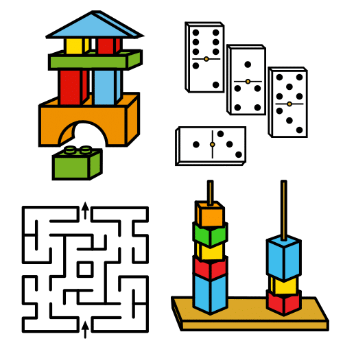
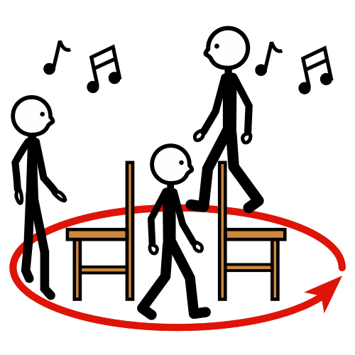

Seguro que estás deseando comenzar a crear tu videojuego, pero antes vamos a pensar juntos en algunos aspectos importantes de los videojuegos que quizás reconozcas y que vas a necesitar.
Para poder diseñar y programar un videojuego necesitamos que recuerdes esas características con las que más has disfrutado al jugarlos.
¡Será divertido!
¿Qué te recuerdan estos sonidos?
Vamos a trabajar en grupo, reproduce y escucha el siguiente vídeo que contiene sonidos o melodías y debate con tus compañeras y compañeros a qué videojuego pertenecen.
Comprueba lo que sabes sobre los sonidos o melodías de los videojuegos respondiendo en tu cuaderno a las 25 cuestiones del siguiente vídeo, ten presente que solo dispones de 7 segundos para responder a cada una de ellas. ¡Debéis ser rápidos!
Seguro que lo hacéis muy bien. Toma nota de los aciertos en tu cuaderno.
¿Qué conoces sobre los juegos?
Vamos a seguir trabajando en grupo, piensa y elige un juego real que te guste, puede ser de cualquier tipo, deportivo como el fútbol, baloncesto, de mesa como el ajedrez, monopolio, las cartas, o cualquier otro.
Responde a estas cuestiones y anótalas en tu cuaderno, después comparte tus respuestas con tus compañeras y compañeros.

Motus dice ¿Cuánto saben tus compañeras o compañeros?
En esta actividad en grupo te planteamos averiguar cuánto sabe tu equipo sobre el funcionamiento de los juegos.
Cuando trabajamos en grupo mejoramos también en equipo. Hay compañeros y compañeras que recuerdan muchas cosas, otras que planifican muy bien, otros diseñan estupendamente…
Por ello es importante que en tu equipo sigáis estos consejos:
- Todo lo que una persona sabe lo comparta con el equipo.
- Colaboramos en las tareas para que el equipo funcione.
- Valoramos lo aportado por cada persona del equipo.
- Respetamos lo que cada miembro aporta al equipo.
¿Qué hace que los juegos te gusten tanto?

Seguimos trabajando en grupo. Vamos a recordar distintos aspectos que hacen atractivos un juego. Para ello vamos a utilizar la herramienta Mentimenter.Piensa y escribe en aquellas características que hacen atractivos los juegos que más te gustan (no tienen porque ser videojuegos).
¿Sabes de qué forma podemos conseguir programar estas características en un videojuego?
Clavis dice ¡Pon mucha atención!
Aquí tienes algunas de esas características para ayudarte:
Repasa lo que has aprendido
Posiblemente no seas consciente de los aprendizajes que has adquirido durante la realización de estos ejercicios y actividades. Reflexiona sobre todo lo que has hecho hasta ahora. De esta forma podrás identificar cuáles han sido las habilidades que has utilizado y las limitaciones que has tenido.
¿Hay algo que te haya resultado un poco más difícil? Piensa una estrategia que puedas usar la próxima vez que te pase algo así (si no se te ocurre ninguna, puedes preguntarle a alguna compañera o compañero).
Motus dice ¿Cómo te has sentido al recordar los videojuegos?
Cualquier actividad que realicemos en clase puede hacernos sentir de muchas maneras: confundido, aliviada, inseguro, tensa, alegre, orgullosa, enfadado… Seguro que las actividades anteriores han despertado en ti diferentes sentimientos. Por este motivo, te pido que te hagas las siguientes preguntas:
- ¿Has sentido lo mismo cuando tú accionas la palanca que cuando lo hace la máquina?
- ¿Cómo te has sentido exponiendo tu opinión ante tus compañeros o compañeras?
- ¿Has mantenido tu opinión o la has cambiado durante la actividad?, ¿por qué?
La forma en la que respondes ante una emoción puede decirte muchas cosas sobre ti.
Conocer las emociones que sientes cuando vas a hacer una actividad te ayudará a:
- Pedir ayuda.
- Relajarte para contestarla.
- Pensar en cómo podrás contestarla.
¡Haz caso a tus emociones!